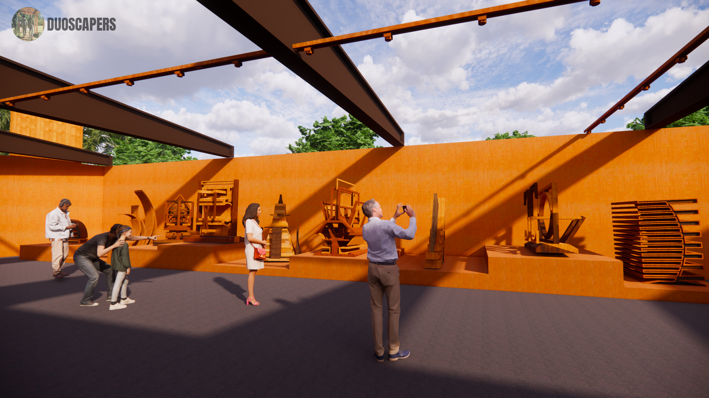
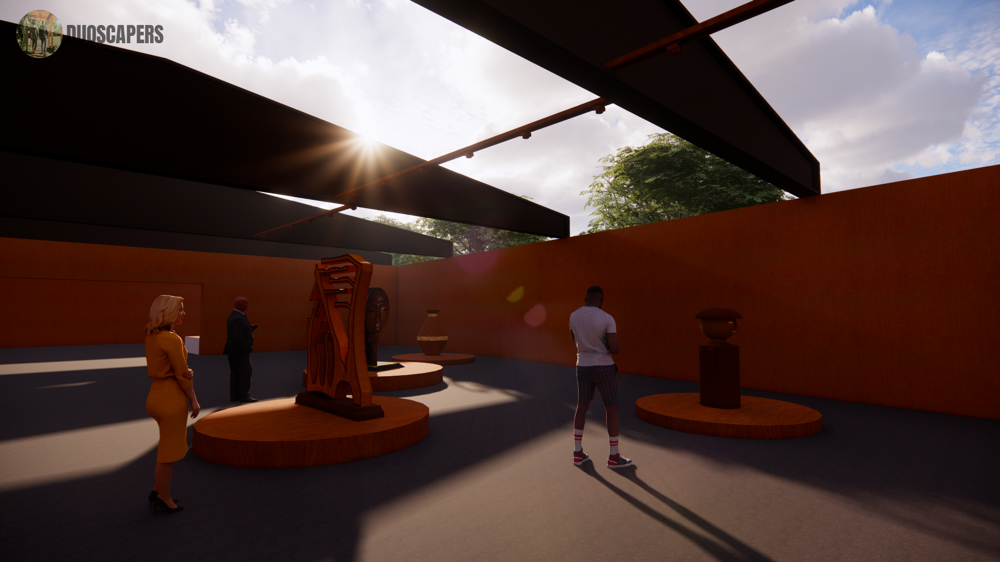
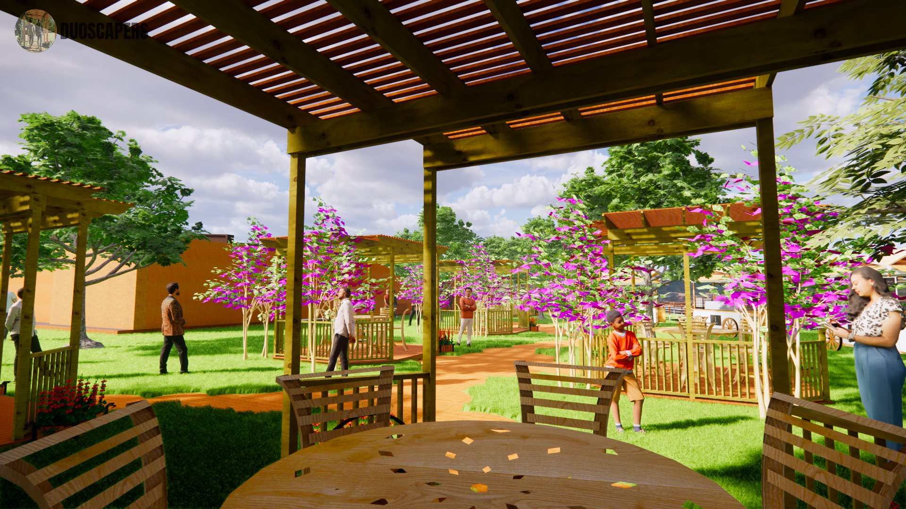
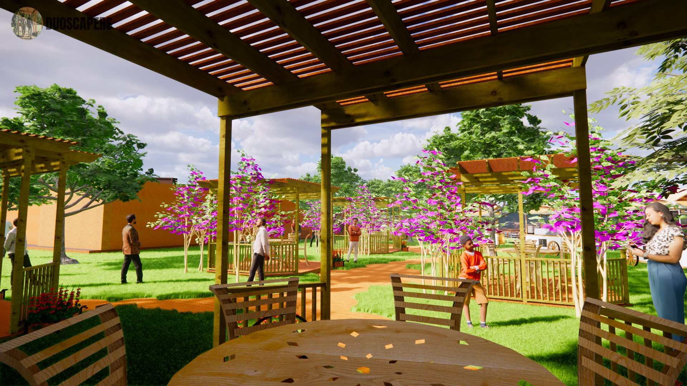

Step into charming stall, where skilled chef creates culinary magic against the backdrop of an open cafe within a wooden art gallery. As you savor the delectable dishes, you're treated not only to a feast for your taste buds but also for your eyes. The gallery's warm wooden accents and artistic ambiance provide a unique dining experience, where creativity and flavor come together in perfect harmony.
Wooden sculpture Gallery Side view:
Front entrance of wooden art gallery, where creativity meets nature's beauty. As you approach, you're greeted by a picturesque landscape that frames the gallery's entrance. Towering trees and lush greenery surround the pathway, creating a natural gallery of their own. This harmonious blend of art and nature sets the stage for a captivating and immersive artistic experience within.
Interior, Wooden Sculptures:
The interior exudes a warm and inviting ambiance. The centerpiece of the gallery is a collection of meticulously crafted wooden sculptures. As explore these captivating pieces, you'll find yourself drawn into a world of creativity and contemplation. Visitors are encouraged to engage with the sculptures, capturing moments of introspection and study, as the gallery invites a deeper connection between art and observer.


Main pathway of wooden art gallery:
Main pathway that leads you to wooden art gallery, a journey that seamlessly blends nature and artistry. As you meander along, you're treated to a picturesque landscape on either side. Lush greenery, vibrant flowers, and well-manicured gardens accompany your every step, creating a captivating natural backdrop. This scenic route not only enhances your anticipation but also offers a serene prelude to the artistic wonders that await within the gallery setting the stage for a truly immersive experience.
Open cafe with flowers and planting:
Open-air cafe, a delightful oasts where the joy of dining meets the beauty of nature. Situated amidst a sea of colorful flowers, this charming eatery offers an inviting and relaxed atmosphere. The gentle breeze and warm sunlight create the perlect weather for patrons to sevor their meals in com/art. With an open vibe that encourages conversation and connection, our cafe invites you to enjoy both delectable cuisine and the splendor of the outdoors, making every meal a memorable experience.
 
